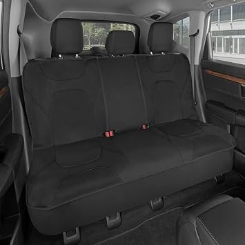
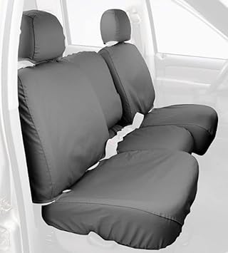
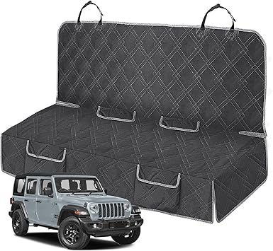

← jeepbenchcovers.com
Jeepbenchcovers in 2026: Worth the Upgrade?
May 2026
We've spent serious time comparing jeepbenchcovers. Some impressed us, some didn't, and a few genuinely surprised us.
What Actually Matters
- Warranty — Real warranty coverage (1+ year) signals a manufacturer that stands behind their product.
- Price trends — jeepbenchcovers prices fluctuate. Track your picks and buy when the price dips.
- Dimensions matter — Read the actual measurements. "Large" means different things to different jeepbenchcovers manufacturers.
What We'd Actually Buy




Errors That Cost Money
Blind brand loyalty — Your favorite brand might not make the best jeepbenchcovers. Stay open to better options.
Skipping negative reviews — A 4.5-star product with durability complaints tells you more than a 5-star product with 8 reviews.
Advice From Experience
- Amazon's return policy removes most of the risk when buying jeepbenchcovers you haven't seen in person.
- The Q&A section on jeepbenchcovers listings often answers questions that no review covers.
- Buying jeepbenchcovers as a gift? Pick something with easy exchanges. Preferences are personal.
Our Take
Good jeepbenchcovers don't have to be complicated or expensive. Check our updated picks and buy with confidence.
Affiliate Disclosure: As an Amazon Associate, we earn from qualifying purchases. This doesn't affect our recommendations.